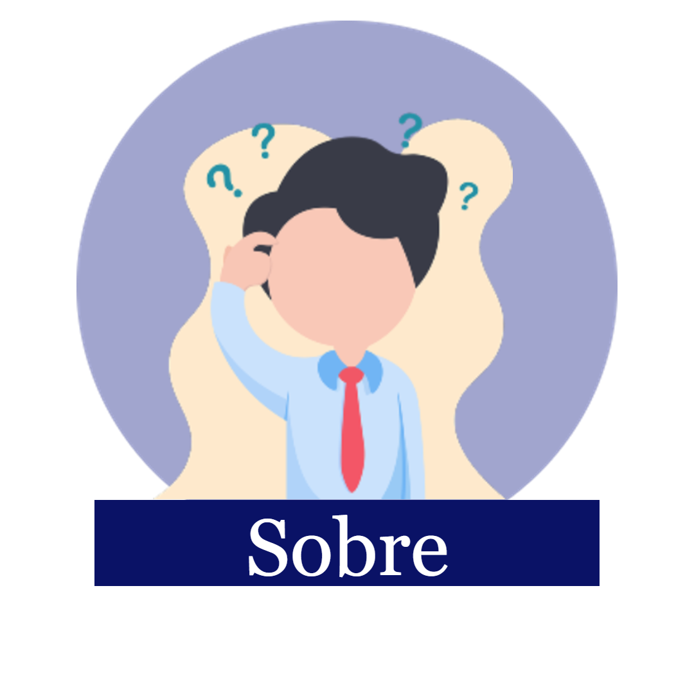

A missão da empresa U-Tech é fornecer soluções para empresas de e-commerce e Internet.O nosso principal cliente é a Fundação Bradesco.Fundada em 1956 pelo Senhor Amador Aguiar, na cidade de São Paulo, atualmente contamos com 10.000 funcionarios.
Nosso foco é:
A Fundação Bradesco é a nossa parceira e disponibiliza uma Escola Virtual, ou seja, um portal de e-leraning dedicado a oferecer cursos à distância - via Internet e semipresenciais.